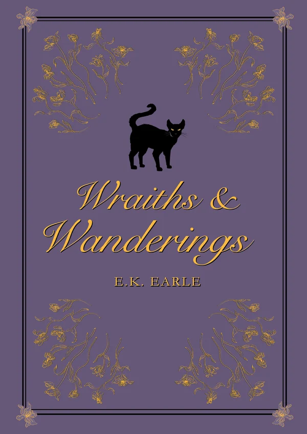

Book 1
Wraiths and Wanderings
Charlotte Blythe is twenty-eight and next in line as head of a prominent occult family. She's supposed to be, at any rate. After the massacre at her debutante ball, she turned her sights elsewhere: making videos that expose the truth about the occult world.
Then she stumbles across a familiar scene, a massacre tainted with the same dark magic as that night twelve years before.